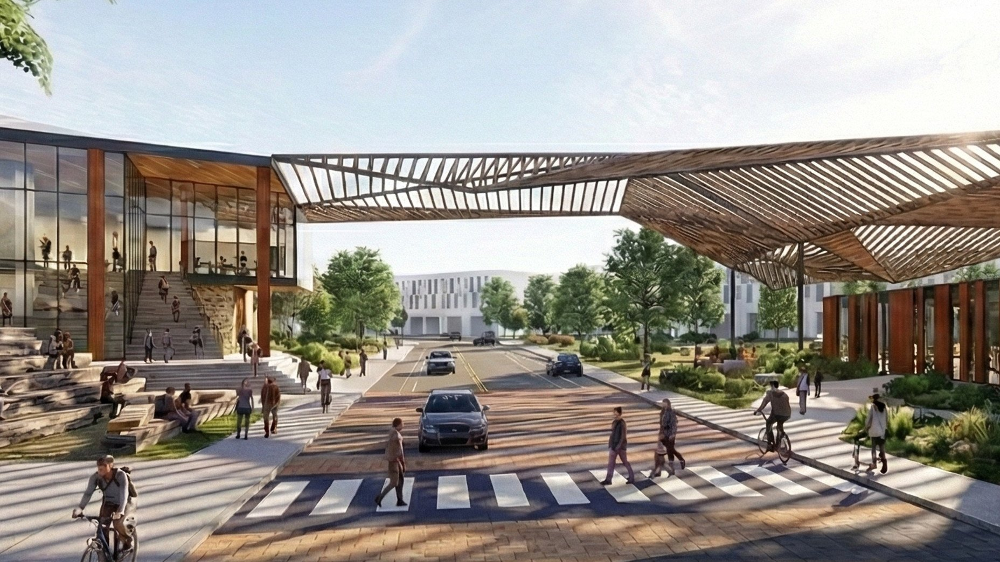
Synergy: A Social Wellness Hub
SYNERGY aims to transform the 29-acre Hancock Shopping Center from a typical parking dominated strip-mall development into a mixed-use community landmark for social wellness. The proposal tackles Austin’s health inequities, housing scarcity, and the dividing legacy of Interstate 35 by integrating wellness infrastructure and commercial vitality with equitable housing.
The Hancock Wellness Center anchors the community between the HEB shopping hub and the Central Health Clinic as a resource for seniors, families, and active adults. The eastern building features paddle courts, a pool with spa amenities, and a basketball court. Connected by green spaces, the western building houses fitness equipment, meditation studios, a geriatric gym, and access to a 0.5-mile multi-use loop. Clinic patients receive prescribed physical therapy and HEB meal kits, while residents from 475 mixed-income units integrate wellness into daily life.
With a $729 million project value, the phased plan generates a 17.6% leveraged IRR. Phase 3 delivers a 40% IRR, proving wellness infrastructure drives market returns. The project is committed to sustainability by targeting LEED-ND Platinum through solar arrays, native landscaping, and stormwater management. A mobility hub integrates five Cap Metro bus routes with protected bike lanes and connects to the East Avenue Trail. This trail crosses the proposed I-35 stitch program, positioning the development as part of an effort to bridge community connectivity across I-35.
Mapping Local Context
Contribution
Within the 5-person design team, I focused on developing and diagramming the narrative vision, designing the comprehensive site plan, planning the four construction phases, and overseeing design specificiations for financial suitability.
Grocers & Health
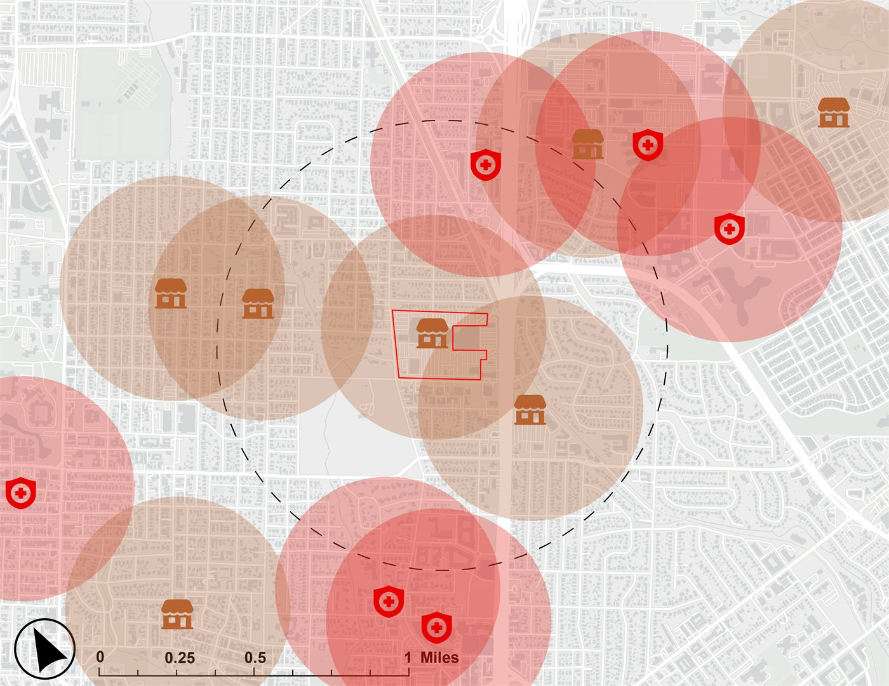
Parks & Tree Canopy
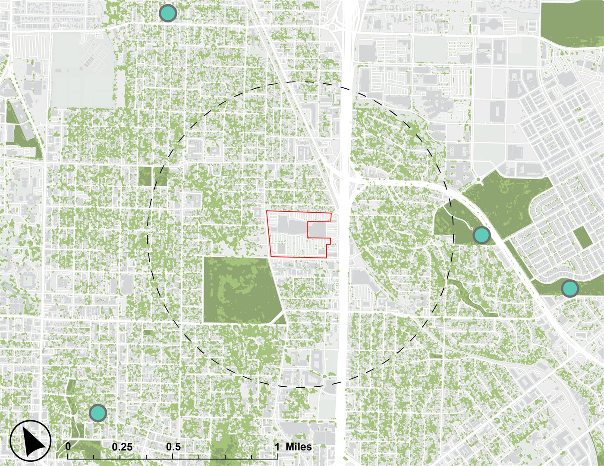
Public Transit
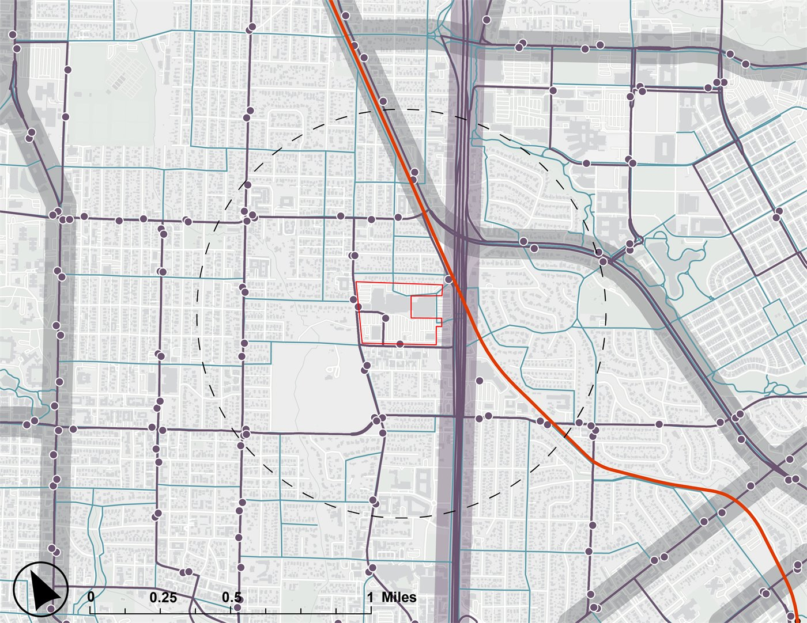
Wellness Vision
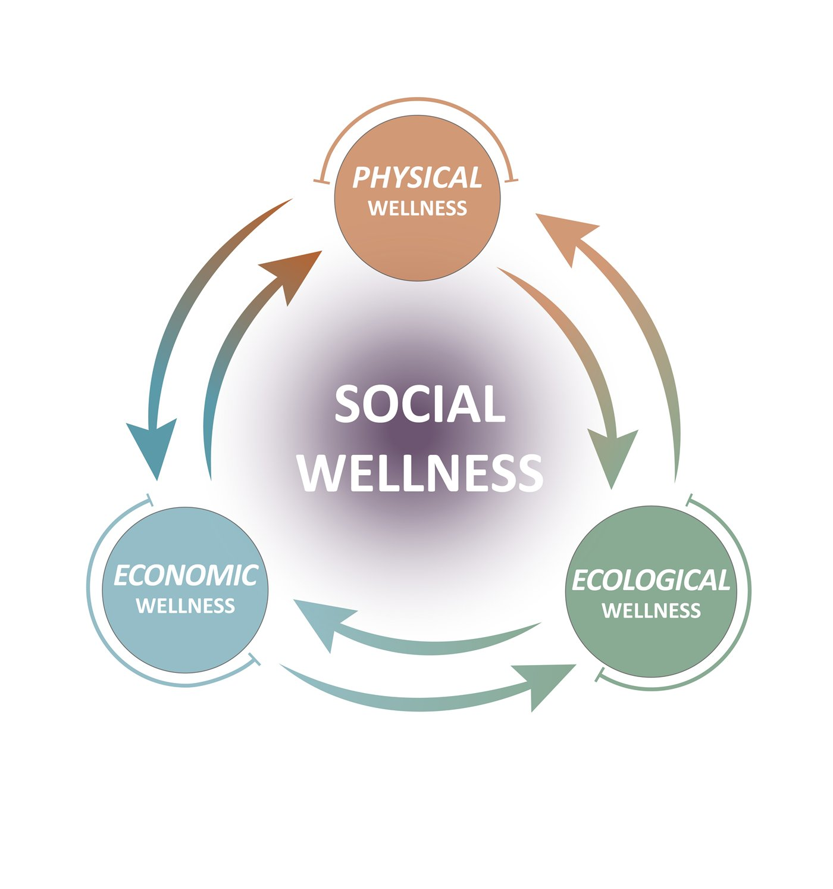
Preventative
HEB
- Fresh food
- Pharmacy
- Restaurants
- Meal kits
- Incubator
Active
Central Health
- Health HQ
- Urgent care
- Check-ups
- Dental
- Medication
Restorative
Synergy Wellness
- Modern gym
- Spa + swim
- Studios
- Courts
- Community space
Site Plan
Hover over the plan to magnify
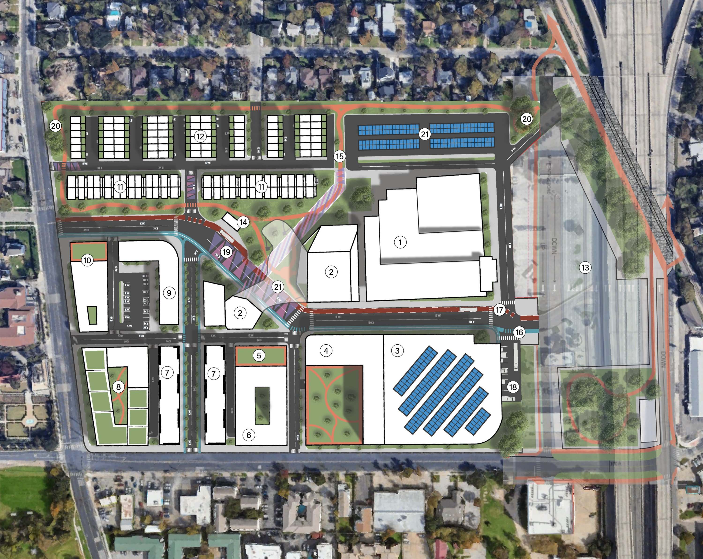
Buildings
- Central Health Clinic
- Wellness Center
- HEB Shopping Hub
- Elevated MultiFamily
- Office
- Parking Structure
- Mixed Use Residential
- Luxury Lofts
- Mixed Use Office
- Hancock Hotel
- Mixed Use Condos
- Townhomes
Connectivity
- Proposed I-35 Stitch
- Mobility Hub + Sheltered Bus Stop
- East Avenue Trail + 0.5-mile Jogging Loop
- Two-way Bike Lane
- Dedicated Bus Lane
- HEB Loading Area
Landscape
- Pavement Art Mural
- Pocket Parks
- Solar Panel Covered Surface Parking
- Shade Canopy
Construction Phases
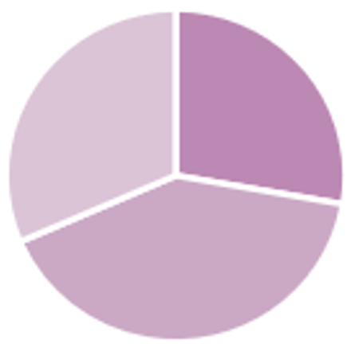
- Office (113K sqft, 27%)
- HEB + Commercial (165K sqft, 41%)
- Parking (128K sqft, 32%)
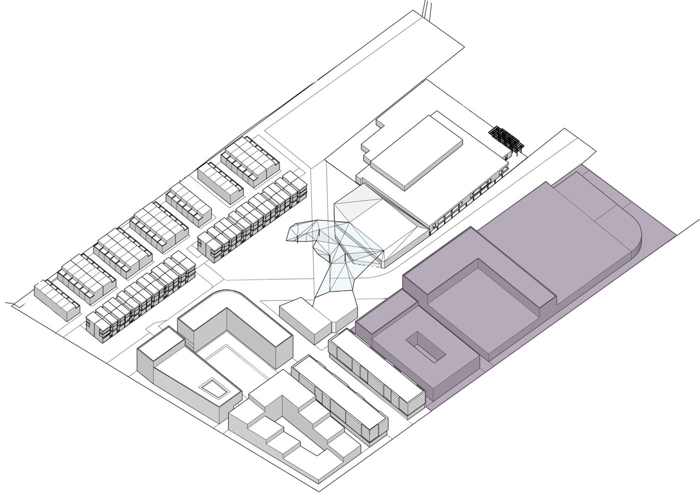
Phase 1
Value: $216 M
Unlevered IRR: 10%
Levered IRR: 2%
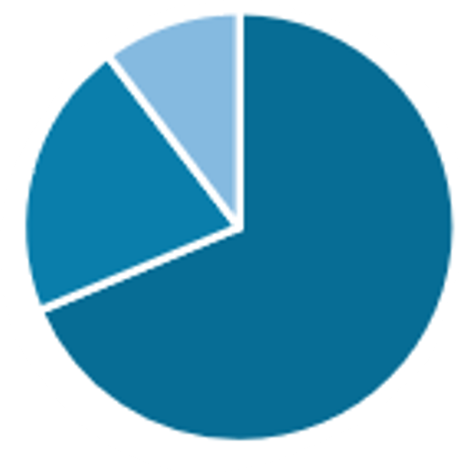
- Market Residential (113K sqft, 70%)
- Commercial (35K sqft, 22%)
- Office (17K sqft, 8%)
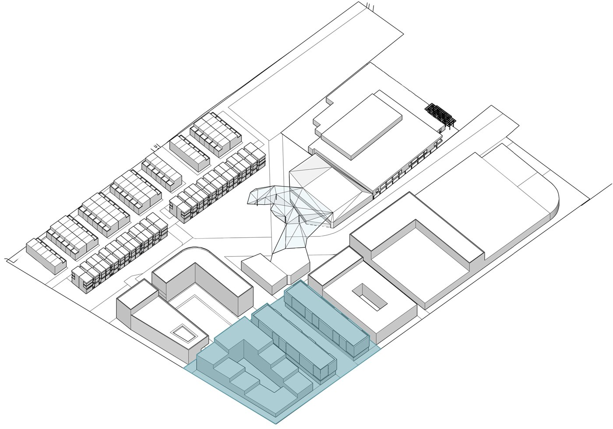
Phase 2
Value: $112 M
Unlevered IRR: 12%
Levered IRR: 0%
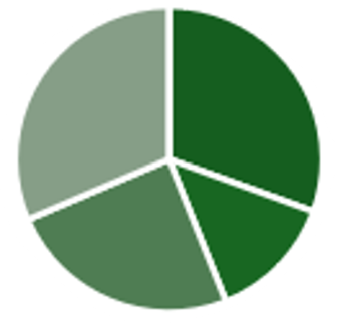
- Hotel (80K sqft, 30%)
- Commercial (35K sqft, 9%)
- Wellness Center (64K sqft, 20%)
- Office (82K sqft, 31%)
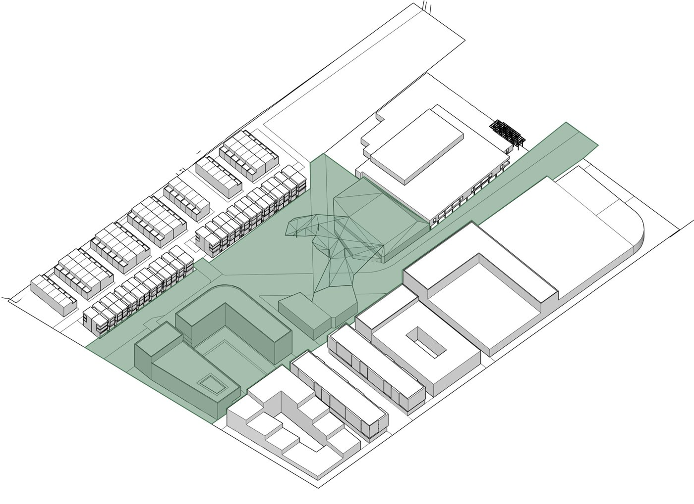
Phase 3
Value: $314 M
Unlevered IRR: 23%
Levered IRR: 40%
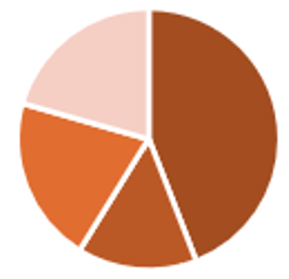
- Market Residential (40K sqft, 46%)
- Affordable Residential (14K sqft, 10%)
- Retail (19K sqft, 22%)
- Parking (19K sqft, 22%)
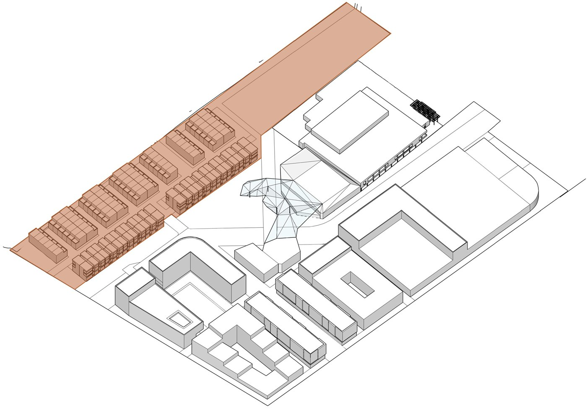
Phase 4
Value: $88 M
Unlevered IRR: 21%
Levered IRR: 22%
Typologies
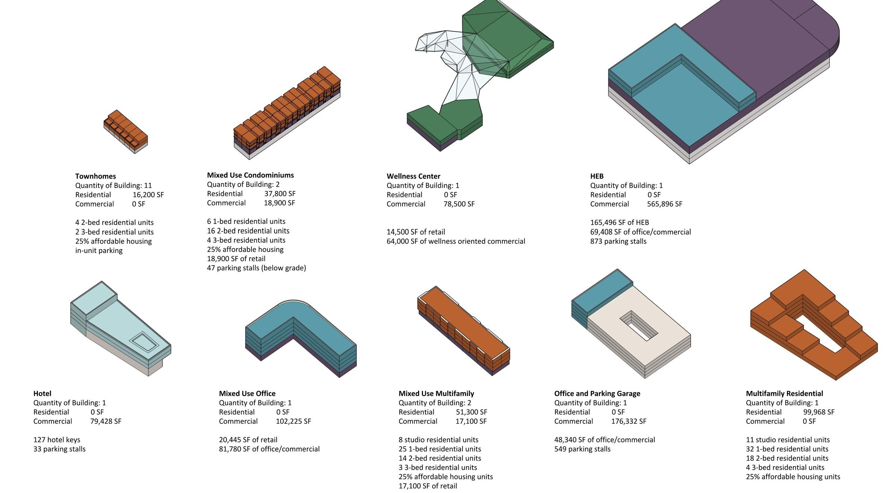